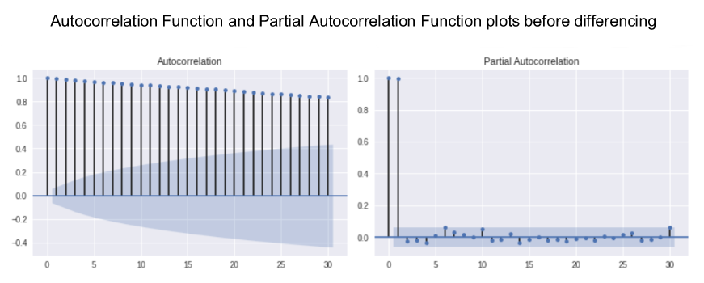

The aim of the project is to investigate the performance of various machine learning models to predict stock market movements based on historical time series data and news article sentiment collected using APIs and web scraping. The basic principle would be to buy low and sell high, but the complexity arises in knowing when to buy and sell a stock.
Four types of analysis exist to forecast the markets - fundamental, technical, quantitative and sentiment - each with its own underlying principles, tools, techniques and strategies, and it is likely that understanding the intuition of each and combining complementary approaches is more optimal than relying solely on one. Forecasting strategies will be developed based on predictions and backtested against a benchmark.
The FTSE 100 share index comprises the top 100 blue chip companies by market capitalisation listed on the London Stock Exchange, the primary stock exchange in the UK and the largest in Europe. As London’s benchmark index it is both representative of the UK’s stock market and an economic bellwether for the global economy given the international exposure of most of its constituents. This study focuses on data from six of the top FTSE 100 companies (AstraZeneca, GlaxoSmithKline, BP, Royal Dutch Shell, HSBC and Unilever) representing a range of sectors including oil, pharmaceuticals, finance and consumer.
The yfinance API will be used to download stock data for opening price (Open), highest and lowest price the stock traded at (High, Low), closing price (Close), number of stocks traded (Volume) and Adjusted Close. For the most part the Adjusted Close price will be selected for prediction purposes to take into account all corporate actions, such as stock splits and dividends, to give a more accurate reflection of the true value of the stock and present a coherent picture of returns.

Data will be transformed to calculate and visualise returns, and covariance and correlation matrices will show strength and direction of the relationship between stocks' returns. These observations could be used to select a portfolio of stocks that complement each other in terms of price movement.
Technical analysis is the use of charts and technical indicators to identify trading signals and price patterns. Various technical strategies will be investigated using the most common leading and lagging trend, momentum, volatility and volume indicators including Moving Averages, Moving Average Convergence Divergence (MACD), Stochastic Oscillator, Relative Strength Index (RSI), Money Flow Index (MFI), Rate of Change (ROC), Bollinger Bands, and On-Balance Volume (OBV).
A time series is basically a series of data points ordered in time and is an important factor in predicting stock market trends. In time series forecasting models, time is the independent variable and the goal is to predict future values based on previously observed values.
Stock prices are often non-stationary and may contain trends or volatility but different transformations can be applied to turn the time series into a stationary process so that it can be modelled.
The Augmented Dickey-Fuller (ADF) test will be used to check for stationarity, and the order of differencing required to make the series stationary will be determined.
Autocorrelation Function (ACF) and Partial Autocorrelation Function (PACF) plots will show whether transformations have removed seasonality and any non-stationary behaviours - a necessary step before focusing on autoregressive time series models.

Models to be evaluated will include Moving Averages, Auto-Regressive Integrated Moving Average (ARIMA), Seasonal Auto-Regressive Integrated Moving Average (SARIMA) and Facebook Prophet.
Recurrent Neural Network (RNN) models such as Simple RNN, Long Short-Term Memory (LSTM) and Gated Recurrent Units (GRU) will also be explored and various machine learning and deep learning models created, trained, tested and optimised.
News articles will be collected from Investing.com by web scraping using Selenium and Beautiful Soup. Sentiment analysis will then be performed using NLP tools such as NLTK's VADER and TextBlob to find sentiment scores before combining the results with historical stock price data to determine whether news sentiment influences stock price direction.
Predicting the stock market will be posed both as a regression problem of price prediction to forecast prices 'n' days in the future, and a classification problem of direction prediction to forecast whether prices will increase or decrease.
The X matrix of features will comprise any additional features engineered from the Adjusted Close price. For the regression problem, the y vector of the target variable will be the Adjusted Close price offset by however many days in advance we want to predict. For the classification problem it will be Buy and Sell signals, or 1 if the price will increase 'n' days in the future, and 0 if it will decrease, respectively.
To avoid look-ahead bias when splitting time series data into training and test sets sklearn's TimeSeriesSplit() class will be used. Successive training sets are supersets of those that come before them so that the model is not trained on data it has already seen. To use randomised data rather than walk-forward validation would lead to overfitting.
Pipelines will be built, and various Gradient-Descent based, Distance-Based and Tree-Based regression and classifier models spot checked, before selecting the best performing models for optimisation using Grid Search cross-validation, and hyperparameter tuning.
Yahoo! Finance for historical stock data.
Investing.com for market news articles.
The Titanic passenger manifest is a popular dataset for practice in solving supervised learning classification problems. The challenge is to build a predictive model to determine which passengers were more likely to survive.
This notebook demonstrates Exploratory Data Analysis techniques and modelling concepts learned on a face-to-face machine learning course and from various resources including blogs, tutorials, documentation and textbooks.
Importing and performing descriptive statistics on the dataset using Pandas revealed missing data and categorical and numerical data types. Visualisation using Matplotlib and Seaborn showed the composition and distribution of data and the strength of correlation between features which would greatly influence chances of survival.
The preprocessing stage comprised imputing missing values, feature encoding to transform categorical into numerical data, feature scaling using NumPy to apply a log transformation to remove impact of skewness, feature extraction and engineering of additional features, binning data into groups, and deletion of irrelevant features to reduce noise and avoid overfitting. The data was standardised using scikit-learn's StandardScaler() function to transform attributes to a standard Gaussian distribution with a mean of 0 and a standard deviation of 1.
During the modelling stage a performance metric was defined (Accuracy), and 14 classification models were evaluated using a 10-fold cross-validation method including decision-tree-based ensemble algorithms, k-nearest neighbors, Naive Bayes, support vector classifier, and a deep neural network model using Keras on a TensorFlow backend. Six models were selected for optimisation using the Grid Search technique and hyperparameters were tuned. Feature importance, accuracy score, confusion matrix, precision and recall score metrics were compared before selecting the Gradient Boosting classifier as the best performing model.
The popular Boston Housing dataset contains information collected by the U.S Census Service concerning housing in the area of Boston MA which was originally published in 1978. It is widely used for practice in solving supervised regression problems and is one of the standard datasets included in the scikit-learn library. The challenge is to develop a model that will predict house prices given a set of features that describe houses in Boston.
The notebook demonstrates Exploratory Data Analysis techniques and modelling concepts learned on a face-to-face machine learning course and from various resources including blogs, tutorials, documentation and textbooks.
The dataset is a dictionary so the keys can be printed to view the attributes such as number of samples and features, feature names and characteristics.
Importing and performing descriptive statistics on the dataset using Pandas revealed two categorical variables, and plotting the distribution of the data using Matplotlib and Seaborn showed a normal distribution with a few outliers. The Pandas corr() function was used to compute the correlation between attributes and Seaborn to visualise the correlation matrix as a heatmap. Univariate and bivariate plots were used to visualise single attributes and two attributes respectively. This included a box plot (univariate) showing outliers whose percentages were calculated using NumPy.
As part of the preprocessing stage the target variable outliers were removed. After feature selection the dataset was split and stored in features and prices variables respectively. The data was normalised using scikit-learn's MinMaxScaler() function, split into training (80%) and test (20%) subsets and shuffled to remove ordering bias.
During the modelling stage a performance metric (Mean Squared Error) was defined and 11 regression models were evaluated using a 10-fold cross-validation method including linear regression, three regularisation methods, k-nearest neighbors, support vector regressor and decision-tree-based ensemble algorithms. Three models were selected for optimisation using the Grid Search technique and hyperparameters were tuned. Feature importance, mean squared error, and variance score metrics were compared before selecting the Gradient Boosting regressor as the best performing model.
Boston housing dataset included with the scikit-learn library.
The Countries of the World dataset comprises US Government data from the World Factbook. The investigation focuses on GDP ($ per capita), Literacy (%) and Phones (per 1000) to test the hypothesis that there would be a significant positive relationship between these variables.
This notebook demonstrates Exploratory Data Analysis techniques learned on a face-to-face machine learning course and from various resources including blogs, tutorials, documentation and textbooks.
Importing and exploring the dataset using Pandas revealed issues for data cleaning including renaming of columns, changing data types from string to float, filling missing values, and removing spaces in the Region column.
Visualisation using Matplotlib and Seaborn showed number of countries per region and a correlation heatmap showed strength of correlation between pairs of numerical variables (GDP and Phones, Literacy and Phones and GDP and Literacy). Boxplots visualised data distribution indicating how the values in the data were spread out for GDP per capita , Literacy (%) and Phones by Region and categorical plots were also used to show the relationship between a numerical and one or more categorical variables. Scatterplots highlighted the strongest (positive) correlation between GDP and Phones which could be seen even more clearly by fitting a linear regression model and plotting the resulting regression line. Other visualisations included bar charts, a frequency histogram and Kernel density estimation (KDE) plot to encode the density of observations on one axis with height along the other axis.
US Government data from the World Factbook.